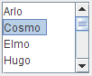
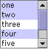

Lección: Usando Componentes Swing
Sección: Cómo Usar Varios Componentes
Cómo Usar Listas
Una
JList presenta al usuario un grupo de items, visualizados en una o más columnas, para
elegir. Las listas pueden tener muchos items, así que están colocadas a menudo en
paneles de desplazamiento.
Además de las listas, los componentes de Swing siguientes presentan items múltiples seleccionables al usuario: cuadros combinados, menus, tablas, y grupos de casillas de verificación o botones de opción. Para visualizar datos jerárquicos, use un árbol.
Las siguientes figuras muestran dos aplicaciones que usan listas. Esta sección usa estos ejemplos como una base para la descripciones que siguen.

|

|
|
ListDialog
(usado por ListDialogRunner) |
ListDemo |
Intente esto:
-
Pulse el botón Lanza para ejecutar ListDemo usando
Java™ Web Start (
descargue KDJ 7 o posterior). Alternativamente, para compilar y ejecutar el ejemplo por usted
mismo, consulte el
índice de ejemplos.

-
Pulse el botón Lanza para ejecutar ListDialogRunner. Alternativemente, para compilar y ejecutar el
ejemplo por usted mismo, consultel el
índice de ejemplos.
-
Para abrir el ListDialog, pulse el botón "Pick a new name" en la ventana titulada "Name That Baby"..
El diálogo resultante es una instancia de ListDialog que ha sido personalizada para tenter el título Name Chooser. - En ListDemo, intente añadir (contratar) y eliminar (despedir) unos pocos items.
- Crear un Modelo
- Inicializar una Lista
- Seleccionar Items En una Lista
- Adición de Elementos y Eliminación de Elementos de una Lista
- Escribir un Procesador de Celdas Personalizadas
- La IPA de una Lista
- Ejemplos que Usan Listas
Crear un Modelo
Hay tres formas de crear un modelo de lista:
-
DefaultListModel
— todo está bien cuidado para usted. Los ejemplos en esta página usan
DefaultListModel. -
AbstractListModel
— usted gestiona los datos e invoca los métodos "fire". Para este enfoque, usted debe hacer
una subclase de
AbstractListModele implementar los métodosgetSizeygetElementAtheredados de la interfazListModel. - ListModel — usted gestiona todo.
Inicializar una Lista
Aquí está el código desde
ListDialog.java que crea y configura su lista:
list = new JList(data); //los datos tienen el tipo Object[]
list.setSelectionMode(ListSelectionModel.SINGLE_INTERVAL_SELECTION);
list.setLayoutOrientation(JList.HORIZONTAL_WRAP);
list.setVisibleRowCount(-1);
...
JScrollPane listScroller = new JScrollPane(list);
listScroller.setPreferredSize(new Dimension(250, 80));
El código pasa una matriz al constructor de la lista. La matriz es rellenada con cadenas que son pasadas desde otro objeto. En nuestro ejemplo, las cadenas son los nombres de los niños.
Otros constructores de JList le permiten inicializar una lista desde un Vector o desde
un objeto que se adhiere a la interfaz de
ListModel
. Si inicializa una lista con una matriz o vector, el constructor implícitamente crea un modelo de lista por
defecto. El modelo de lista por defecto es inmutable ─ no puede añadir, eliminar, o reemplazar
items en la lista. Para crear una lista cuyos items puedan ser cambiados individualmente, establezca el modelo
de lista a una instancia de una clase de modelo de lista mutable, tal como una instancia de
DefaultListModel. Puede establecer un modelo de lista cuando crea la lista o llamando al
método setModel. Vea Adición de Elementos y Eliminación de Elementos de una
Lista para un ejemplo.
La llamada a setSelectionMode especifica cuantos items el usuario puede seleccionar, y si éstos
deben ser contiguos; la próxima sección le indica más sobre los modos de selección.
La llamada a setLayoutOrientation permite a la lista visualizar sus datos en múltiples columnas.
El valor JList.HORIZONTAL_WRAP especifica que la lista visualizará sus items de izquierda a derecha
antes de saltar a una nueva fila. Otro valor posible es JList.VERTICAL_WRAP, el cual especifica que
los datos son visualizados de arriba a abajo (como es usual) antes de salta a una nueva columna. Las siguientes
figuras muestran estas posibilidades de envoltura, junto con la por defecto, JList.VERTICAL.

|

|
 |
HORIZONTAL_WRAP |
VERTICAL_WRAP |
VERTICAL |
En combinación con la llamada a setLayoutOrientation, invocar setVisibleRowCount(-1)
hace a la lista visualizar el máximo número de items posibles en el espacio disponible en pantalla. Otro uso
común de setVisibleRowCount es especificar al panel de desplazamiento de la lista cuantas filas la
lista prefiere visualizar.
Seleccionar Items En una Lista
Una lista usa una instancia de
ListSelectionModel para manejar su selección. Por defecto, un modelo de selección de lista
permite cualquier combinación de items a ser seleccionados a la vez. Puede especificar un modo de selección
diferente llamando al método setSelectionMode sobre la lista. Por ejemplo, tanto
ListDialog como ListDemo establecen el modo de selección a
SINGLE_SELECTION (una constantes definida por ListSelectionModel) de forma que
sólo un item en la lista puede ser seleccionado. La siguiente tabla describe los tres modos de selección
de lista:
| Modo | Descripción |
|---|---|
SINGLE_SELECTION

|
Sólo un item puede ser seleccionado a la vez. Cuando el usuario selecciona un item, cualquier item previamente seleccioando es deseleccionado primero. |
SINGLE_INTERVAL_SELECTION

|
Items múltiples y contigüos pueden ser seleccionados. Cuando el usuario comienza un nuevo rango de selección, cualesquiera items seleccionados previamente son deseleccionados primero. |
MULTIPLE_INTERVAL_SELECTION
 |
Por defecto. Cualquier combinación de items puede ser seleccionada. El usuario debe deseleccionar items explícitamente. |
No importa cual modo de selección use su lista, la lista dispara eventos de selección de lista cada vez que la
selección cambia. Usted puede procesar estos eventos añadiendo un
oyente de selección de lista a la lista con el método
addListSelectionListener. Un oyente de selección de lista debe implementar un método:
valueChanged. Aquí está el método valueChanged para el oyente en
ListDemo:
public void valueChanged(ListSelectionEvent e) {
if (e.getValueIsAdjusting() == false) {
if (list.getSelectedIndex() == -1) {
//No hay seleccion, deshabilita el botón de disparo.
fireButton.setEnabled(false);
} else {
//Hay seleccion, habilita el botón de disparo.
fireButton.setEnabled(true);
}
}
}
Muchos eventos de selección de lsita pueden ser generados desde una acción de un único usuario tal como un click
del ratón. El método getValueIsAdjusting devuelve true si el usuario está aún
manipulando la selección. Este programa particular está interesado sólo en el resultado final de la acción del
usuario, así que el método valueChanged hace algo sólo si getValueIsAdjusting devuelve
false.
Debido a que la lista está en modo de selección simple, éste código puede usar getSelectedIndex
para obtener el índice del item que acaba de seleccionarse. JList ofrece otros métodos para
establecer u obtener la selección cuando el modo de selección permite más de un item
a ser seleccionado. Si usted quiere, puede escuchar eventos en el modelo de selección de lista de la lista en vez
de en la lista en sí misma.
ListSelectionDemo es un ejemplo que muestra como escuchar por eventos de selección de lista en el modelo
de selección de lista y le permite cambiar el modo de selección de una lista dinámicamente.
Adición de Elementos y Eliminación de Elementos de una Lista
El ejemplo de ListDemo que mostramos previamente caracteriza una lista cuyos contenidos pueden cambiar. Puede
encontrar el código fuente para ListDemo en
ListDemo.java
.
Aquí está el código de ListDemo que crea un objeto de modelo de lista mutable, coloca los items iniciales en él,
y usa el modelo de lista para crear la lista:
listModel = new DefaultListModel();
listModel.addElement("Jane Doe");
listModel.addElement("John Smith");
listModel.addElement("Kathy Green");
list = new JList(listModel);
Este programa en particular usa una instancia de DefaultListModel, una clase provista por Swing.
A pesar del nombre de la clase, una lista no tiene un DefaultListModel a menos que su programa
explícitamente lo marque así. Si DefaultListModel no se ajusta a sus necesidades, puede escribir
un modelo de lista personalizado, el cual debe adherirse al interfaz ListModel.
El trozo de código siguiente muestra el método actionPerformed para el oyente de acción registrado
en el botón Fire. La línea de código en negrita elimina el item seleccionado en la lsita. Las
líneas siguientes en el método deshabilitan el botón Fire si la lista está ahora vacía, y hace otra selección si
no lo está.
public void actionPerformed(ActionEvent e) {
int index = list.getSelectedIndex();
listModel.remove(index);
int size = listModel.getSize();
if (size == 0) { //No queda nadie, deshabilitamos el disparo.
fireButton.setEnabled(false);
} else { //Seleccionamos un indice.
if (index == listModel.getSize()) {
//eliminado el item en la última posición
index--;
}
list.setSelectedIndex(index);
list.ensureIndexIsVisible(index);
}
}
Aquí está el método actionPerformed para el oyente de acción compartido por el botón
Hire y el campo de texto:
public void actionPerformed(ActionEvent e) {
String name = employeeName.getText();
//El usuario no tecleó un nombre único...
if (name.equals("") || alreadyInList(name)) {
Toolkit.getDefaultToolkit().beep();
employeeName.requestFocusInWindow();
employeeName.selectAll();
return;
}
int index = list.getSelectedIndex(); //obtiene el índice seleccionado
if (index == -1) { //no hay selección, así que la inserción está empezando
index = 0;
} else { //añadir después del item seleccionado
index++;
}
listModel.insertElementAt(employeeName.getText(), index);
//Restablece el campo de texto.
employeeName.requestFocusInWindow();
employeeName.setText("");
//Selecciona el nuevo item y lo hace visible.
list.setSelectedIndex(index);
list.ensureIndexIsVisible(index);
}
Este código usa el método insertElementAt del modelo de lista para insertar el nuevo nombre después
de la selección actual o, si no existe selección, al principio de la lista. Si sólo desea añadir al final de la
lista, puede usar el método addElement de DefaultListModel en su lugar.
Siempre que los elementos se agreguen, eliminen o modifiquen en una lista, el modelo de lista disparará los
eventos de datos de la lista. Refiérase a
Cómo Escribir un Oyente de Datos de Lista para información sobre la escucha de estos eventos. Esa
sección contiene un ejemplo que es similar a ListDemo, pero añade botones que mueven items
arriba o abajo en la lista.
Escribir un Procesador de Celdas Personalizadas
Una lista usa un objeto llamado renderizador de celda para visualizar cada uno de sus items. El renderizador de
celdas por defecto sabe cómo visualizar cadenas e iconos y visualiza Objetos invocando
toString. Si quiere cambiar la forma en que el renderizador por defecto muestra iconos o cadenas, o
si quiere un comportamiento diferente al que es ofrecido por toString, puede implementar un
renderizador de celda personalizado. Tome estos pasos para proveer a una lista de un renderizador de celdas
personalizado:
- Escriba una clase que implemente el interfaz
ListCellRenderer. -
Cree una instancia de su clase y llame a
setCellRendererde la lista usando la instancia como un argumento.
No ofrecemos un ejemplo de una lista con un renderizador de celda personalizado, pero tenemos un ejemplo de cuadro combinado con un renderizador personalizado ─ y los cuadros combinados usan el mismo tipo de renderizador que las listas. Vea el ejemplo descrito en Proporcionar un Renderizador Personalizado.
La IPA de una Lista
Las siguientes tablas listan los constructorres y métodos de JList comunmente usados. Otros métodos
que probablemente vaya a invocar sobre un objeto JList son aquellos tales como
setPreferredSize que sus superclases ofrecen. Vea
La IPA de JComponent para las tablas de métodos heredados comunmente usados.
Gran parte de la operación de una lista es manejada por otros objetos. Los items en la lista son gestionados por
un objeto de modelo de lista, la selección es gestionada por un objeto de modelo de selección de lista, y la
mayoría de los programas colocan una lista en un panel de desplazamiento para manejar el desplazamiento.
En su mayor parte, no es necesario preocuparse por los modelos porque JList los crea según sea
necesario y usted interacciona con ellos implícitamente con métodos de conveniencia de JList.
Dicho esto, la IPA para el uso de listas cae en estas categorías:
- Inicializando los Datos de la Lista
- Visualizar la Lista
- Gestionar la Selección de la Lista
- Gestionar los Datos de la Lista
| Método o Constructor | Propósito |
|---|---|
|
JList(ListModel)
JList(Object[]) JList(Vector) JList() |
Crea una lista con la lista de items inicial especificada. Los segundo y tercer constructores
implícitamente crean un ListModel inmutable; usted no debe modificar posteriormente la
matriz pasada o Vector.
|
|
void setModel(ListModel)
ListModel getModel() |
Establece u obtiene el modelo que contiene los contenidos de la lista. |
|
void setListData(Object[])
void setListData(Vector) |
Establece los items en la lista. Estos métodos implícitamente crean un ListModel inmutable.
|
| Método | Propósito |
|---|---|
|
void setVisibleRowCount(int)
int getVisibleRowCount() |
Establece u obtiene la propiedad visibleRowCount. Para una orientación de diseño
VERTICAL, esto establece u obtiene el número preferido de filas a visualizar sin que se
requiera desplazamiento. Para las orientaciones de diseño HORIZONTAL_WRAP o
VERTICAL_WRAP, define cómo las celdas se disponen. Vea
setLayoutOrientation(int) para más información. El valor por defecto de esta propiedad es
VERTICAL.
|
|
void setLayoutOrientation(int)
int getLayoutOrientation() |
Establece u obtiene la forma en que las celdas de la lista son dispuestas. Los formatos de disposición
posibles están especificados por los valores definidos en JList VERTICAL (una
columna sencilla de celdas; por defecto),
HORIZONTAL_WRAP (estilo "periódico" con el contenido flotando horizontalmente
y después verticalmente), y VERTICAL_WRAP (estilo "periódico" con el contenido
flotando verticalmente y luego horizontalmente).
|
|
int getFirstVisibleIndex()
int getLastVisibleIndex() |
Obtiene el índice del primero o último item visible. |
| void ensureIndexIsVisible(int) | Desplácese para que el índice especificado esté visible dentro de la ventana gráfica en la que se encuentra esta lista. |
| Método | Propósito |
|---|---|
| void addListSelectionListener(ListSelectionListener) | Registra para recibir la notificación de los cambios de selección. |
|
void setSelectedIndex(int)
void setSelectedIndices(int[]) void setSelectedValue(Object, boolean) void setSelectionInterval(int, int) |
Establece la selección actual como se indica. Use setSelectionMode para establecer qué
rangos de selección son aceptables. El argumento booleano especifica si la lista debería desplazarse a
sí misma de forma que el item seleccionado esté visible.
|
|
int getAnchorSelectionIndex()
int getLeadSelectionIndex() int getSelectedIndex() int getMinSelectionIndex() int getMaxSelectionIndex() int[] getSelectedIndices() Object getSelectedValue() Object[] getSelectedValues() |
Obtiene información sobre la selección actual como se indica. |
|
void setSelectionMode(int)
int getSelectionMode() |
Establece u obtiene el modo de selección. Valores aceptables son: SINGLE_SELECTION,
SINGLE_INTERVAL_SELECTION, o MULTIPLE_INTERVAL_SELECTION (por defecto), los
cuales están definidos en ListSelectionModel.
|
|
void clearSelection()
boolean isSelectionEmpty() |
Establece u obtiene si algunos items están selecciónados. |
| boolean isSelectedIndex(int) | Determina si el índice especificado está seleccionado. |
| Clase o Método | Propósito |
|---|---|
| int getNextMatch(String, int, javax.swing.text.Position.Bias) |
Dado el índice de inicio, busca a través de la lista por un item que empieza con la cadena especificada
y devuelve ese índice (o -1 si la cadena no se encontró). El tercer argumento, el cual especifica la
dirección de la búsqueda, puede ser o Position.Bias.Forward o
Position.Bias.Backward. Por ejemplo, si tiene una lista de 6 items,
getNextMatch("Matisse", 5, javax.swing.text.Position.Bias.Forward) busca la
cadena "Matisse" en el item en el índice 5, entonces (si es necesario) en el índice 0,
índice 1, etc.
|
|
void setDragEnabled(boolean)
boolean getDragEnabled() |
Establece u obtiene la propiedad que determina si el manejo automático de arrastrar y solotar está habilitado. Vea Arrastrar y Soltar y Transferencia de Datos para más detalles. |
Ejemplos que Usan Listas
Esta tabla muestra los ejemplos que usan JList y donde esos ejemplos están descritos.
| Ejemplo | Donde se Describió | Notas |
|---|---|---|
SplitPaneDemo
|
Cómo Usar Paneles de División | Contiene una lista inmutable, de selección simple. |
ListDemo
|
Esta sección | Demuestra como añadir y eliminar items de una lista en ejecución. |
ListDialog
|
Esta sección, Cómo Usar BoxLayout | Implementa un diálogo modal con una lista de selección simple. |
ListDataEventDemo
|
Cómo Escribir un Oyente de Datos de Lista | Demuestra la escucha para eventos de datos de lista en un modelo de lista. |
ListSelectionDemo
|
Cómo Escribir un Oyente de Selección de Lista | Contiene una lista y una tabla que comparten el mismo modelo de selección. Usted puede dinámicamente elegir el modo de selección. |
SharedModelDemo
|
Cómo Usar Modelos |
Modifica ListSelectionDemo de forma que la lista y la tabla comparten el mismo modelo de
datos.
|
CustomComboBoxDemo
|
Ofreciendo un Renderizador Personalizado | Muestra cómo disponer un renderizador personalizado para un cuadro combinado. Ya que las listas y los cuadros combinados usan el mismo tipo de renderizador, puede usar lo que aprenda aquí y aplicarlo a las listas. En realidad, una lista y un cuadro combinado pueden compartir un renderizador. |
Vea el tutorial Usando Controls IU de JavaFX: Vista de Lista para aprender a cómo crear listas en JavaFX.